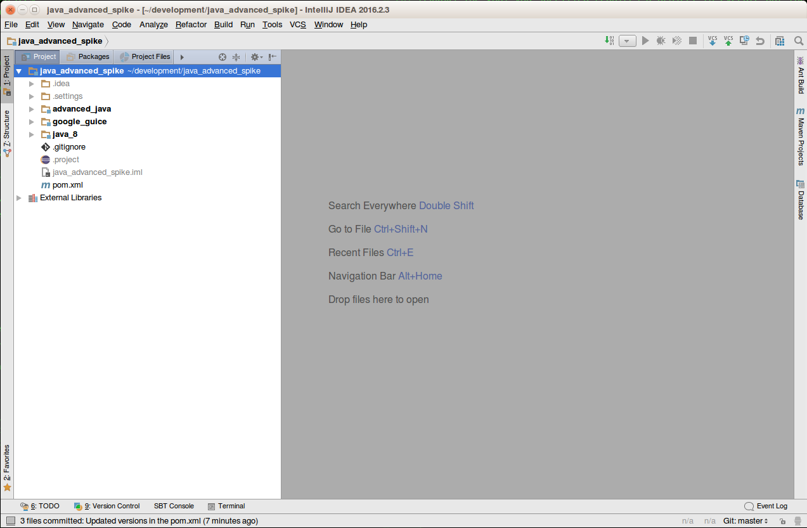
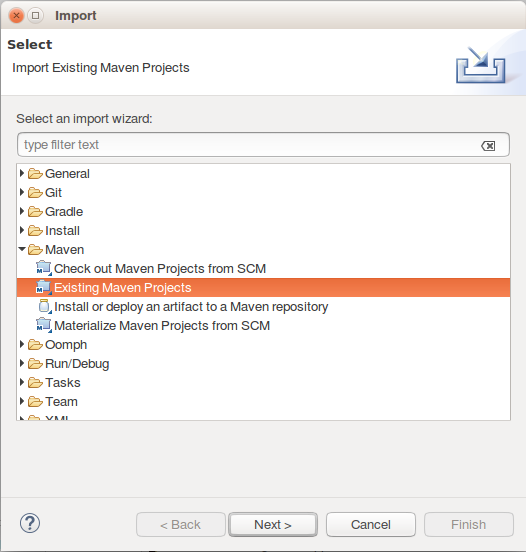
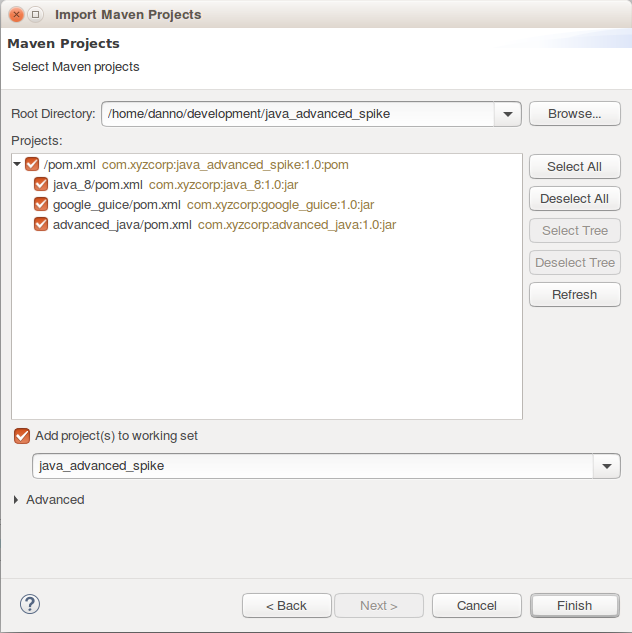

% javac -version
javac 1.8.0_65
% java -version
java version "1.8.0_65"
Java(TM) SE Runtime Environment (build 1.8.0_65-b17)
Java HotSpot(TM) 64-Bit Server VM (build 25.65-b01, mixed mode)
% mvn -v
Apache Maven 3.3.9 (bb52d8502b132ec0a5a3f4c09453c07478323dc5; 2015-11-10T09:41:47-07:00)
Maven home: /usr/lib/mvn/apache-maven-3.3.9
Java version: 1.8.0_65, vendor: Oracle Corporation
Java home: /usr/lib/jvm/jdk1.8.0_65/jre
Default locale: en_US, platform encoding: UTF-8
OS name: "linux", version: "4.4.0-34-generic", arch: "amd64", family: "unix"Java 8
Daniel HinojosaTodo
- Composing Functions
- Laziness
- Parallelism
- Collect
- Multiline functions
- Closures
- Object::toString instead
- Reusing Streams
- No mutable state, Processing
Java 8 Topics
What you will learn in this course:
- Lambdas
- Method References
OptionalStream- Default Methods
CompletableFuture- Date Time API
What’s new in Java 8?
What’s new in Java 8?
For the Java Programming Language:
- Lambda Expressions, a new language feature, has been introduced in this release. They enable you to treat functionality as a method argument, or code as data. Lambda expressions let you express instances of single-method interfaces (referred to as functional interfaces) more compactly.
- Method references provide easy-to-read lambda expressions for methods that already have a name.
- Default methods enable new functionality to be added to the interfaces of libraries and ensure binary compatibility with code written for older versions of those interfaces.
- Repeating Annotations provide the ability to apply the same annotation type more than once to the same declaration or type use.
- Type Annotations provide the ability to apply an annotation anywhere a type is used, not just on a declaration. Used with a pluggable type system, this feature enables improved type checking of your code.
- Improved type inference.
- Method parameter reflection.
Lab: Pre-Class Check
Before we begin it is assumed that all of you have the following tools installed:
- JDK 1.8.x
- Maven 3.3.x
To verify that all your tools work as expected
|
Note
|
The JDK 8 Version doesn’t have to be exact as long as it is Java 8. |
Lab: Download the three day project
From https://github.com/dhinojosa/advanced_java_spike download the project .zip file and extract it into your favorite location.

Optional Lab: Open Project in IntelliJ
Once downloaded and extracted to your favorite location, In IntelliJ Open The Project, IntelliJ will recognize it as a Maven project and you are good to go.

Optional Lab: Open Project in Eclipse
Once downloaded and extracted:
Step 1: Select File > Import Project in the menu.
Step 2: In the following dialog box:

- Open the Maven category
- Select Import Existing Maven Projects
Optional Lab: Open Project in Eclipse (Continued)
Step 3:

- Click the Browse: button next to Root Directory
- Select the location of your java_advanced_spike directory.
Step 4: Click Finish
Lambdas
About Java 8 Lambdas
Functional Interface Definition
A functional interface is any interface that contains only one abstract method. (A functional interface may contain one or more default methods or static methods.) Because a functional interface contains only one abstract method, you can omit the name of that method when you implement it.
(equals is an explicit declaration of a concrete method
inherited from Object that, without this declaration,
would otherwise be implicitly declared.)
Lab: Create MyPredicate
Step 1: Ensure you have a src/main/java directory in the java_8 module
Step 2: Ensure that the folders are seen as a build path (Eclipse only)
Step 3: Create a package called com.xyzcorp in src/main/java
Step 4: Create an interface in com.xyzcorp called MyPredicate
package com.xyzcorp;
public interface MyPredicate<T> {
public boolean test(T item);
}About MyPredicate
- It’s an interface
- One
abstractmethod:test defaultmethods don’t count (More on that later)staticmethods don’t count- Any methods inherited from
Objectdon’t count either.
package com.xyzcorp;
public interface MyPredicate<T> {
public boolean test(T item);
}Conclusion: We can omit the name when we implement it.
Functional filter
Filter is a higher-order function that processes a data structure (usually a list) in some order to produce a new data structure containing exactly those elements of the original data structure for which a given predicate returns the boolean value true.
Functional filter by example
-
Given List of
list:[1,2,3,4] -
Given a function
f:x → x % 2 == 0 -
When calling
filteron alistwithf:[1,2,3,4].filter(f) -
Then a copy of the
listshould return:[2,4]
Lab: Using MyPredicate
Step 1: Create a File in the com.xyzcorp package called Functions.java
Step 2: Create an method called myFilter as seen below.
package com.xyzcorp;
import java.util.ArrayList;
import java.util.Arrays;
import java.util.List;
public class Functions {
public static <T> List<T> myFilter (List<T> list, MyPredicate<T> predicate) {
ArrayList<T> result = new ArrayList<T>();
for (T item : list) {
if (predicate.test(item)) {
result.add(item);
}
}
return result;
}Note: This is the functional filter
Lab: Test Method in LambdaTest.java
Step 1: Ensure you have a src/test/java directory in the java_8 module
Step 2: Ensure that the folders are seen as a build path (Eclipse only)
Step 3: Create a package called com.xyzcorp in src/test/java
Step 4: Create a class called LambdaTest in the com.xyzcorp package with the following test:
package com.xyzcorp;
import org.junit.Test;
import java.util.Arrays;
import java.util.List;
public class LambdasTest {
@Test
public void testMyFilter() {
List<Integer> numbers = Arrays.asList(2, 4, 5, 1, 9, 15, 19, 21, 33, 78, 93, 10);
List<Integer> filtered = Functions.myFilter(numbers, new MyPredicate<Integer>() {
@Override
public boolean test(Integer item) {
return item % 2 == 0;
}
});
System.out.println(filtered);
}
}|
Note
|
Here we are defining what the predicate will do when sent into filter.
|
Step 5: Run the test in your IDE to verify that it works as expected
Lab: MyPredicate is "Lambdaized"
Step 1: In the test you just wrote, convert MyPredicate into a lambda and use your IDE’s faculties to do so.
package com.xyzcorp;
import org.junit.Test;
import java.util.Arrays;
import java.util.List;
public class LambdasTest {
@Test
public void testMyFilter() {
List<Integer> numbers = Arrays.asList(2, 4, 5, 1, 9, 15, 19, 21, 33, 78, 93, 10);
List<Integer> filtered = Functions.myFilter(numbers, item -> item % 2 == 0);
System.out.println(filtered);
}
}Functional map
Applies a given function to each element of a list, returning a list of results in the same order. It is often called apply-to-all when considered in functional form.
Functional map by example
-
Given List of
list:[1,2,3,4] -
Given a function
f:x → x + 1 -
When calling
mapon alistwithf:[1,2,3,4].map(f) -
Then a copy of the
listshould return:[2,3,4,5]
Lab: Create a MyFunction
Step 1: Create an interface for MyFunction
- In
src/main/javaand in the packagecom.xyzcorpcreate aninterfacecalledMyFunction - The interface should have a method called
apply - The
MyFunctioninterface should have two parameterized typesT1andR - The
applymethod have one parameter(T1 in) - The
applymethod should have one return type:R
Lab: Create a myMap in Functions.java
Step 1: Create static method called myMap in Functions.java with the following method header:
public static <T, R> List<R> myMap(List<T> list, MyFunction<T, R> function) { }Step 2: Fill in the method with what you believe a map should look like given the previous description.
Lab: Use myMap in LambdaTest.java
Step 1: Add the following test to your LambdaTest.java file:
package com.xyzcorp;
import org.junit.Test;
import java.util.Arrays;
import java.util.List;
public class LambdasTest {
...
@Test
public void testMyMap() {
List<Integer> numbers = Arrays.asList(2, 4, 5, 1, 9, 15, 19, 21, 33, 78, 93, 10);
List<Integer> mapped = Functions.myMap(numbers, new MyFunction<Integer, Integer>() {
@Override
public Integer apply(Integer item) {
return item + 2;
}
});
System.out.println(mapped);
}
}Step 2: Convert the new MyFunction anonymous instantiation into a lambda using your IDE’s faculties
Step 3: Run to verify it all works!
Functional forEach
Performs an action on each element returning nothing or
void, a sink
Functional forEach by example
-
Given List of
list:[1,2,3,4] -
Given a function
f:x → System.out.println(x) -
When calling
forEachon alistwithf:[1,2,3,4].forEach(f) -
Then
voidis returned. This is called a side effect.
Lab: Create MyConsumer
Step 1: Under src/main/java, and inside the com.xyzcorp package, create an interface called MyConsumer with the following content:
package com.xyzcorp;
public interface MyConsumer<T> {
public void accept(T item);
}Lab: Create a forEach in ListOps.java
Step 1: Create static method called myForEach in Functions.java with the following method header:
public static <T, R> void myForEach(List<T> list, MyConsumer<T> consumer) {}Step 2: Fill in the method with what you believe a forEach should look like
Lab: Use myForEach in LambdaTest.java
Step 1: Add the following test to your LambdaTest.java file:
package com.xyzcorp;
import java.util.ArrayList;
import java.util.Arrays;
import java.util.List;
public class LambdaTest {
...
@Test
public void testForEach() {
List<Integer> numbers = Arrays.asList(2, 4, 5, 1, 9, 15, 19, 21, 33, 78, 93, 10);
Functions.myForEach(numbers, new MyConsumer<Integer>() {
@Override
public void consume(Integer item) {
System.out.println(item);
}
});
}
}Step 4: Convert the new MyConsumer anonymous instantiation into a lambda using your IDE’s faculties
Step 5: Run to verify it all works!
A Detour with Method References
- When a lambda expression does nothing but call an existing method
- It’s often clearer to refer to the existing method by name.
- Works with lambda expressions for methods that already have a name.
Types of Method References
| Kind | Example |
|---|---|
Reference to a static method |
|
Reference to an instance method of a particular object |
|
Reference to an instance method of an arbitrary object of a particular type |
|
Reference to a constructor |
|
Lab: forEach with a method reference
Step 1: Convert x → System.out.println(x) from the testForEach exercise in LambdaTest.java into a method reference.
package com.xyzcorp;
import org.junit.Test;
import java.util.Arrays;
import java.util.List;
public class LambdasTest {
...
@Test
public void testForEach() {
List<Integer> numbers = Arrays.asList(2, 4, 5, 1, 9, 15, 19, 21, 33, 78, 93, 10);
Functions.myForEach(numbers, System.out::println);
}
}|
Note
|
Although confusing, in System.out, out is a public final static variable. Therefore, println is a non-static method of java.io.PrintStream. This is an instance method of an object.
|
Lab: Method Reference to a static method
Step 1: Enter the following in the test method, testMethodReferenceAStaticMethod into LambdaTests.java and convert it using a method reference.
package com.xyzcorp;
import org.junit.Test;
import java.util.Arrays;
import java.util.List;
public class LambdasTest {
...
@Test
public void testMethodReferenceAStaticMethod() {
List<Integer> numbers = Arrays.asList(2, 4, 5, 1, 9, 15, 19, 21, 33, 78, 93, 10);
System.out.println(Functions.myMap(numbers, a -> Math.abs(a)));
}
}|
Note
|
Use your IDE to guide you. It’s easier that way. |
Step 2: Run to verify it all works!
Lab: Method Reference with a Containing Type
Step 1: Enter the following test method testMethodReferenceAContainingType in LambdasTest.java and convert it using a method reference.
package com.xyzcorp;
import org.junit.Test;
import java.util.Arrays;
import java.util.List;
public class LambdasTest {
...
@Test
public void testMethodReferenceAContainingType() {
List<String> words = Arrays.asList("One", "Two", "Three", "Four");
System.out.println(Functions.myMap(words, s -> s.length()));
}
}|
Note
|
Use your IDE to guide you. It’s easier that way. |
Step 2: Run to verify it all works!
Lab: Method Reference with a Containing Type Trick Question
Step 1: Enter the following test method testMethodReferenceAContainingTypeTrickQuestion in LambdasTest.java and convert it using a method reference.
package com.xyzcorp;
import org.junit.Test;
import java.util.Arrays;
import java.util.List;
public class LambdasTest {
...
@Test
public void testMethodReferenceAContainingTypeTrickQuestion() {
List<Integer> numbers = Arrays.asList(2, 4, 5, 1, 9, 15, 19, 21, 33, 78, 93, 10);
System.out.println(Functions.myMap(numbers, number -> number.toString()));
}
}|
Note
|
Use your IDE to guide you. It’s easier that way. |
Step 2: Run to verify it all works!
Lab: Create a Tax Rate class:
Step 1: In src/main/java, create a file called TaxRate.java in the com.xyzcorp package with the following content:
package com.xyzcorp;
public class TaxRate {
private final int year;
private final double taxRate;
public TaxRate(int year, double taxRate) {
this.year = year;
this.taxRate = taxRate;
}
public double apply(int subtotal) {
return (subtotal * taxRate) + subtotal;
}
}Step 2: Ensure it compiles.
Lab: Method Reference with an Instance
Step 1: Enter the following test method testMethodReferenceAnInstance in LambdasTest.java and convert it using a method reference.
package com.xyzcorp;
import org.junit.Test;
import java.util.Arrays;
import java.util.List;
public class LambdasTest {
...
@Test
public void testMethodReferenceAnInstance() {
List<Integer> numbers = Arrays.asList(2, 4, 5, 1, 9, 15, 19, 21, 33, 78, 93, 10);
TaxRate taxRate2016 = new TaxRate(2016, .085);
System.out.println(Functions.myMap(numbers, subtotal -> taxRate2016.apply(subtotal)));
}
}|
Note
|
Use your IDE to guide you. It’s easier that way. |
Step 2: Run to verify it all works!
Lab: Method Reference with an New Type
Step 1: Enter the following test method testMethodReferenceANewType in LambdasTest.java and convert it using a method reference.
package com.xyzcorp;
import org.junit.Test;
import java.util.Arrays;
import java.util.List;
public class LambdasTest {
...
@Test
public void testMethodReferenceANewType() {
List<Integer> numbers = Arrays.asList(2, 4, 5, 1, 9, 15, 19, 21, 33, 78, 93, 10);
System.out.println(Functions.myMap(numbers, value -> new Double(value)));
}
}|
Note
|
Use your IDE to guide you. It’s easier that way. |
Step 2: Run to verify it all works!
Lab: Create MySupplier
Step 1: In src/main/java, create an interface in the com.xyzcorp package called MySupplier
package com.xyzcorp;
public interface MySupplier<T> {
public T get();
}|
Note
|
Compare the difference to MyConsumer
|
Lab: Create a myGenerate in Functions.java
Step 1: Create static method called myGenerate with the following method header which takes a MySupplier, and a count, and returns a List with count number of items where each element is derived from invoking the Supplier
public static <T> List<T> myGenerate(MySupplier<T> supplier, int count) {}Step 2: Fill in the method with what you believe a myGenerate should look like
Lab: Use myGenerate in LambdaTest.java
Step 1: Add the following test, testMyGenerate to the LambdaTests class:
package com.xyzcorp;
import org.junit.Test;
import java.time.LocalDateTime;
import java.util.Arrays;
import java.util.List;
public class LambdasTest {
...
@Test
public void testMyGenerate() {
List<LocalDateTime> localDateTimes = Functions.myGenerate(new MySupplier<LocalDateTime>() {
@Override
public LocalDateTime get() {
return LocalDateTime.now();
}
}, 10);
System.out.println(localDateTimes);
}
}|
Note
|
LocalDateTime.now() is from the new Java Date/Time API from Java 8.
|
Step 2: Convert the new MySupplier anonymous instantiation into a lambda using your IDE’s faculties
Step 3: Run to verify it all works!
Lab: Viewing Consumer, Supplier, Predicate, Function, in the official Javadoc.
Lab: Multi-line Lambdas
Step 1: In LambdasTest.java create the following test, testLambdasWithRunnable where a java.lang.Runnable and java.lang.Thread is being created.
package com.xyzcorp;
import org.junit.Test;
import java.time.LocalDateTime;
import java.util.Arrays;
import java.util.List;
public class LambdasTest {
...
@Test
public void testLambdasWithRunnable() {
Thread t = new Thread(new Runnable() {
@Override
public void run() {
String threadName =
Thread.currentThread().getName();
System.out.format("%s: %s%n",
threadName,
"Hello from another thread");
}
});
t.start();
}
}|
Note
|
Runnable is an interface with one abstract method.
|
Step 2: Convert the Runnable into a lambda.
Step 3: Notice how the lambda is created, this is a multi-line lambda.
Closure
- Lexical scoping caches values provided in one context for use later in another context.
- If lambda expression closes over the scope of its definition, it is a closure.
public static Integer foo
(Function<Integer, Integer> f) {
return f.apply(5);
}
public void otherMethod() {
Integer x = 3;
Function<Integer, Integer> add3 = z -> x + z;
System.out.println(foo(add3));
}Lexical Scoping Restrictions
To avoid any race conditions:
The variable that is being in enclosed must either be:
final- Effectively final. No change can be made after used in a closure.
Closure Error
The following will not work…
public static Integer foo
(Function<Integer, Integer> f) {
return f.apply(5);
}
public void otherMethod() {
Integer x = 3;
Function<Integer, Integer> add3 = z -> x + z;
x = 10;
System.out.println(foo(add3));
}Lab: Create Duplicated Code
An application for a closure is to avoid repetition.
Step 1: In LambdasTest.java create the following test, testClosuresAvoidRepeats
package com.xyzcorp;
import org.junit.Test;
import java.time.LocalDateTime;
import java.util.Arrays;
import java.util.List;
public class LambdasTest {
...
@Test
public void testClosuresAvoidRepeats() {
MyPredicate<String> stringHasSizeOf4 =
str -> str.length() == 4;
MyPredicate<String> stringHasSizeOf2 =
str -> str.length() == 2;
List<String> names = Arrays.asList("Foo", "Ramen", "Naan", "Ravioli");
System.out.println(Functions.myFilter(names, stringHasSizeOf4));
System.out.println(Functions.myFilter(names, stringHasSizeOf2));
}
}Step 2: Notice that stringHasSize4 and stringHasSize2 are duplicated.
Lab: Refactor Duplicated Code with a Closure
An application for a closure is to avoid repetition.
Step 1: In LambdasTest.java change testClosuresAvoidRepeats to avoid repeats to look like the following:
package com.xyzcorp;
import org.junit.Test;
import java.time.LocalDateTime;
import java.util.Arrays;
import java.util.List;
public class LambdasTest {
...
public MyPredicate<String> stringHasSizeOf(final int length) {
return null; //Create your closure here
}
@Test
public void testClosuresAvoidRepeats() {
List<String> names = Arrays.asList("Foo", "Ramen", "Naan", "Ravioli");
System.out.println(Functions.myFilter(names, stringHasSizeOf(4)));
System.out.println(Functions.myFilter(names, stringHasSizeOf(2)));
}
}Step 2: Inside of stringHasSizeOf(final int length) return a MyPredicate that closes around the length.
Optional
Sir Richard Antony Hoare on the
null referenceI call it my billion-dollar mistake. It was the invention of the null reference in 1965. At that time, I was designing the first comprehensive type system for references in an object oriented language (ALGOL W). My goal was to ensure that all use of references should be absolutely safe, with checking performed automatically by the compiler. But I couldn’t resist the temptation to put in a null reference, simply because it was so easy to implement. This has led to innumerable errors, vulnerabilities, and system crashes, which have probably caused a billion dollars of pain and damage in the last forty years.
Optional Defined in Java 8
A container object which may or may not contain a non-null value. If a value is present,
isPresent()will returntrueandget()will return the value.
|
Warning
|
Optional is not Serializable
|
|
Warning
|
This is a value-based class; use of identity-sensitive operations
(including reference equality (==), identity hash code, or synchronization) on instances of Optional may have unpredictable results and should be avoided.
|
Streams
Streams differ from Collections in the following ways:
- No storage. A stream is not a data structure that stores elements; instead
- It conveys elements from a source through a pipeline of computational operations
Sources can include.
- Data structure
- An array
- Generator function
- I/O channel
- Functional in nature. An operation on a stream produces a result, but does not modify its source.
- Intermediate operations are laziness-seeking exposing opportunities for optimization.
- Possibly unbounded. While collections have a finite size, streams need not.
- Short-circuiting operations such as
limit(n)orfindFirst()can allow computations on infinite streams to complete in finite time. - Consumable, The elements of a stream are only visited once during the life of a stream.
- Like an
java.util.Iterator, a newStreammust be generated to revisit the same elements of the source.
Streams Overview

Streams Overview With Code

Lab: Create a Basic Stream
Step 1: Create a class called StreamsTest in the com.xyzcorp package with the following test:
Step 2: Run the test
package com.xyzcorp;
import org.junit.Test;
import java.util.Arrays;
import java.util.List;
import java.util.stream.Collectors;
public class StreamsTest {
@Test
public void testBasicStream() {
List<Integer> strings = Arrays.asList(1, 4, 5, 10, 11, 12, 40, 50);
strings.stream().map(x -> x + 1).collect(Collectors.toList());
}
}- The
stream()call converts the stringListinto a stream - The stream becomes a pipeline that functional operations can be completed.
mapis an intermediate operationcollectis an terminal operation- The terminal operation will convert the
streaminto a list` Collectorsoffers a wide range of different terminal operations
Doing your own collecting
- When calling
collect, you can specify your own functions
Java API for the
Stream method collect:<R> R collect(Supplier<R> supplier,
BiConsumer<R, ? super T> accumulator,
BiConsumer<R, R> combiner);The Supplier in collect
Functionthat creates a new result container.In a parallel execution:
- May be called multiple times
- Must return a fresh value each time.
Java API for the
Stream method collect:<R> R collect(Supplier<R> supplier,
BiConsumer<R, ? super T> accumulator,
BiConsumer<R, R> combiner);The Accumulator in collect
Functionfor incorporating an additional element into a result
Java API for the
Stream method collect:<R> R collect(Supplier<R> supplier,
BiConsumer<R, ? super T> accumulator,
BiConsumer<R, R> combiner);The Combiner in collect
Functionfor combining two values- Must be compatible with the
accumulatorfunction
Java API for the
Stream method collect:<R> R collect(Supplier<R> supplier,
BiConsumer<R, ? super T> accumulator,
BiConsumer<R, R> combiner);Lab: Create your own collect
Step 1: In StreamsTest in create the following test (Yes, it’s a bit long)
Step 2: Run the test
Step 3: Discuss what we are looking at.
Step 4: Using your IDEs convert these functions to lambdas or method references.
package com.xyzcorp;
import org.junit.Test;
import java.util.ArrayList;
import java.util.Arrays;
import java.util.List;
import java.util.function.BiConsumer;
import java.util.function.Supplier;
import java.util.stream.Collectors;
public class StreamsTest {
...
@Test
public void testCompleteCollector() {
List<Integer> numbers = Arrays.asList(0, 1, 2, 3, 4, 5, 6, 7, 8, 9);
List<Integer> result = numbers.stream().map(x -> x + 1).collect(new Supplier<List<Integer>>() {
@Override
public List<Integer> get() {
return new ArrayList<Integer>();
}
}, new BiConsumer<List<Integer>, Integer>() {
@Override
public void accept(List<Integer> integers, Integer integer) {
System.out.println("adding integer: " + integer);
integers.add(integer);
}
}, new BiConsumer<List<Integer>, List<Integer>>() {
@Override
public void accept(List<Integer> left, List<Integer> right) {
synchronized (numbers) {
System.out.println("left = " + left);
System.out.println("right = " + right);
left.addAll(right);
System.out.println("combined = " + left);
}
}
});
System.out.println("Ending with the result = " + result);
}
}Parallelizing Streams
- We can call
parallel()anywhere in our pipeline when needed. - This is will cause the rest of that pipeline to be executed on a different thread.
- Aggregate operations and parallel streams enable you to implement parallelism with non-thread-safe collections, provided that you do not modify the collection while you are operating on it.
- Parallelism is not automatically faster than performing operations serially, although it can be if you have enough data and processor cores
Lab: Parallelizing collect
Step 1: In StreamsTest, and in the testCompleteCollector add a parallel to the stream pipeline.
Step 2: Run the test
Step 3: Discuss what we are looking at and how it is different without parallel
package com.xyzcorp;
import org.junit.Test;
import java.util.ArrayList;
import java.util.Arrays;
import java.util.List;
import java.util.function.BiConsumer;
import java.util.function.Supplier;
import java.util.stream.Collectors;
public class StreamsTest {
...
@Test
public void testCompleteCollector() {
List<Integer> numbers = Arrays.asList(0, 1, 2, 3, 4, 5, 6, 7, 8, 9);
List<Integer> result = numbers.stream().map(x -> x + 1).parallel().collect(
ArrayList::new,
(integers, integer) -> {
System.out.println("adding integer: " + integer);
integers.add(integer);
}, (left, right) -> {
synchronized (numbers) {
System.out.println("left = " + left);
System.out.println("right = " + right);
left.addAll(right);
System.out.println("combined = " + left);
}
});
System.out.println("Ending with the result = " + result);
}
}Lab: Testing a Summation Terminal Operation
Step 1: In StreamsTest, create a testSum test with the following content{
Step 2: Run the test
package com.xyzcorp;
import org.junit.Test;
import java.util.ArrayList;
import java.util.Arrays;
import java.util.List;
import java.util.function.BiConsumer;
import java.util.function.Supplier;
import java.util.stream.Collectors;
public class StreamsTest {
...
@Test
public void testSum() {
List<Integer> numbers = Arrays.asList(0, 1, 2, 3, 4, 5, 6, 7, 8, 9);
Integer result = numbers.stream().map(x -> x + 1)
.collect(Collectors.summingInt(x -> x));
System.out.println(result);
}
}Specialized Streams
- There are a collection of primitive based
Streamthat support sequential and parralel aggregate operations. These operations are specialized for those primitives and they include
IntStream- To convert from a
Stream<Integer>to aIntStreamusedmapToInt - To convert from a
IntStreamto aStream<Integer>useboxed()
- To convert from a
DoubleStream- To convert from a
Stream<Double>to aDoubleStreamusedmapToDouble - To convert from a
DoubleStreamto aStream<Double>useboxed()
- To convert from a
LongStream- To convert from a
Stream<Long>to aLongStreamusedmapToLong - To convert from a
LongStreamto aStream<Double>useboxed()
- To convert from a
Default Methods
- Enable you to add new functionality to the
interfaceof your libraries - Ensure binary compatibility with code written for older versions of those
interface. - Comes closer to have "concrete" method in an "interface" by composing other
abstractmethods.
Default Method Arbitrary Example
public interface Human {
public String getFirstName();
public String getLastName();
default public String getFullName() {
return String.format("%s %s",
getFirstName(), getLastName());
}
}Identity Function Defined

- Identity Function Definition
In mathematics, an identity function, also called an identity relation or identity map or identity transformation, is a function that always returns the same value that was used as its argument.
Source: Wikipedia
Inside of java.util.Function
static <T> Function<T, T> identity() {
return t -> t;
}Identity Function Replacement
Step 1: In StreamsTest, refactor testSum to use the Identity Function{
Step 2: Run the test
Thank You
- Email: dhinojosa@evolutionnext.com
- Github: https://www.github.com/dhinojosa
- Twitter: http://twitter.com/dhinojosa
- Linked In: http://www.linkedin.com/in/dhevolutionnext